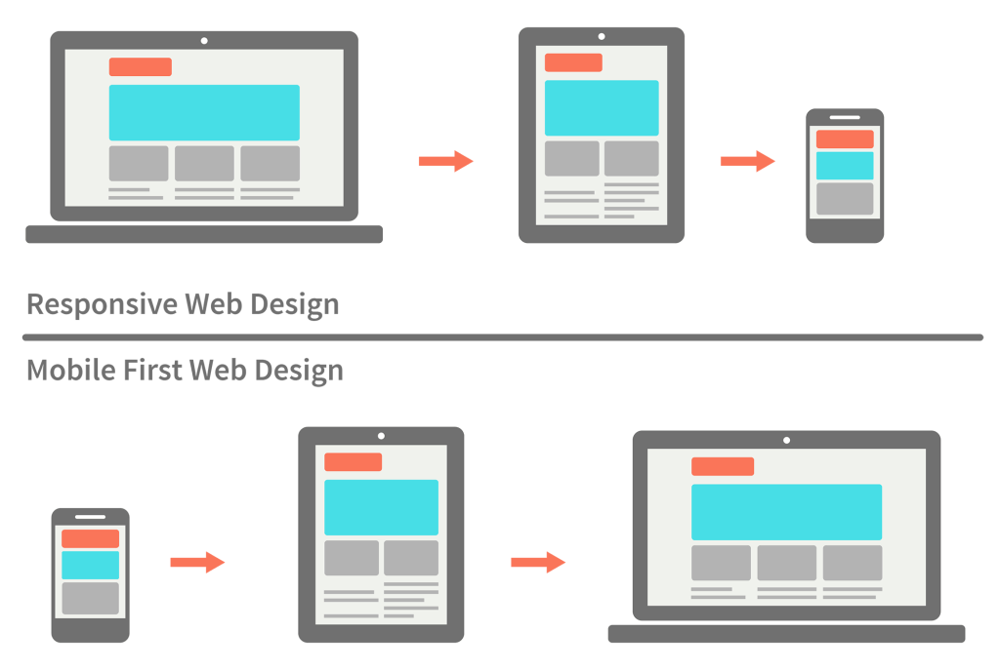

Responsive Design
One approach of Responsive Design is mobile first. This is where you design you website specifically for a mobile device first. This can help since more items on a website are already stacked to begin with. Since more people are on their phones now anyways, it can be a quick way to get your site up and running while you work on the desktop version.
The other approach which is an older approach is desktop first or responsive design. In this design you'll start making changes to the site as it's going down in size. So you start making your grids right off the bat and make your initial desktop design first.
